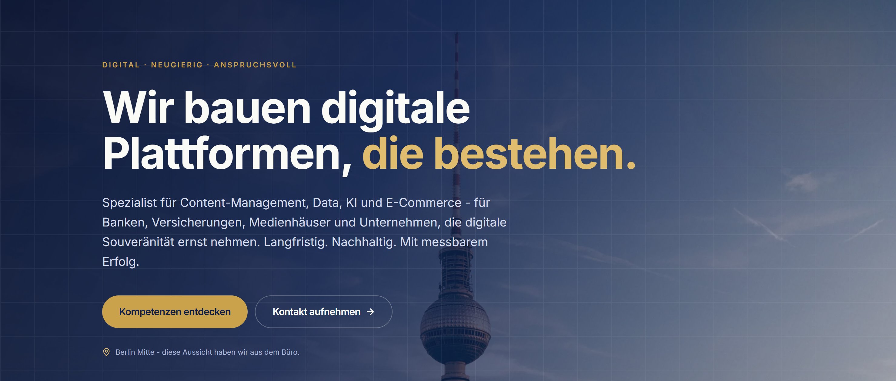
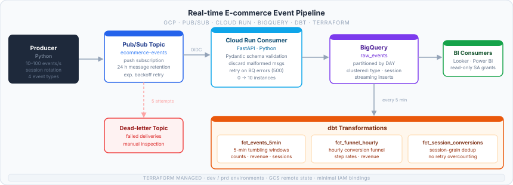
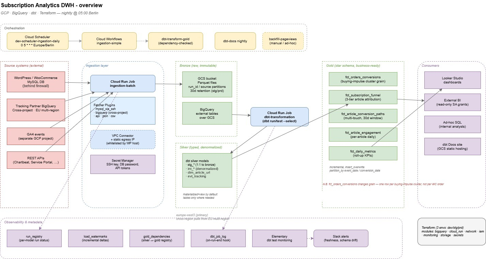

A selection of platforms, websites, and engineering work delivered for real clients.

Full rebuild of the marketing site for a Berlin digital consultancy (~50 staff) - design system, content model, and a static Astro 5 build deployed to Cloudflare Pages. Launching soon.

Streaming clickstream pipeline on GCP: synthetic events published to Pub/Sub, validated and written to BigQuery by a Cloud Run consumer, aggregated by dbt into funnel and session-conversion models.

End-to-end data warehouse for a regional news publisher: three source systems joined in a star schema, multi-touch attribution, ~240M daily tracking events.